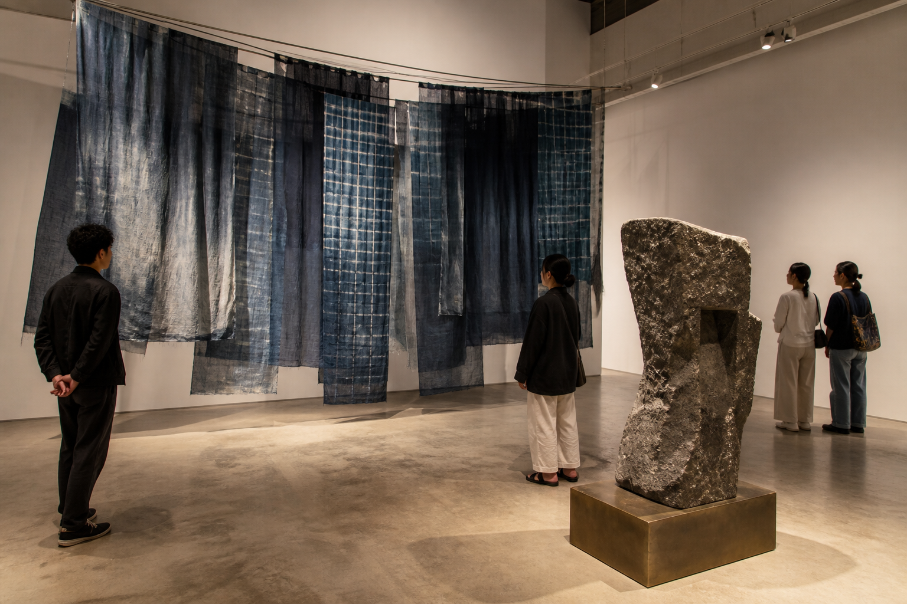

Making a travelling collection legible across five cities.
Programme architecture, wayfinding, collection stories, and a local-language digital guide.
Read the case ↗
Independent design office / Southeast Asia
Identity systems, exhibitions, and digital tools for organisations whose work has a real place, public, and afterlife.
Open the craft archive case ↗Programme architecture, wayfinding, collection stories, and a local-language digital guide.
Read the case ↗An arrival system joining borrowing, events, quiet rooms, and neighborhood memory.
Read the case ↗Packaging, shop floor, and a commerce pattern that protects material detail.
Read the case ↗Tell us what people need to understand, where the work will live, and what cannot be compromised. We will respond with the relevant discipline, a practical first step, and the right people—not a generic capabilities deck.
Start an inquiry ↗